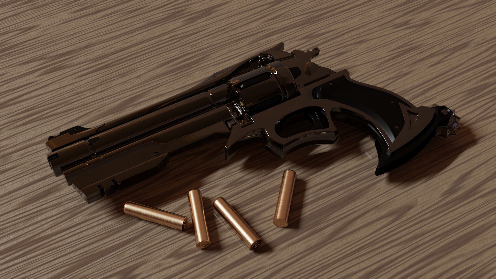

Рендеринг изображения
Ниже представлено отрендеренное изображение 3D-модели револьвера. Данное изображение получено с ипользованием инструментов программы Blender. Процесс создания подобных изображений состоит из нескольких этапов:
Blender предоставляет массу различных инструментов, которые при эффективном и правильном использовании позволят вам создавать фотореалистичные и зображения при минимальных временных затратах.

При помощи Blender можно создавать не только статичные изображения, но и динамический контент. Перейдите по ссылке ниже и посмотрите, на что способны инструменты анимации в Blender.